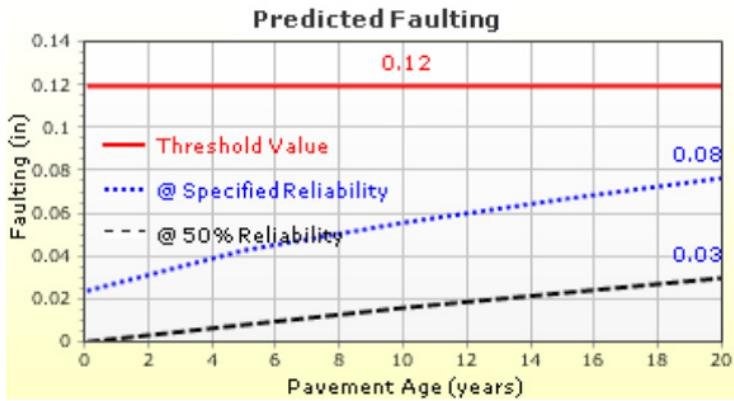
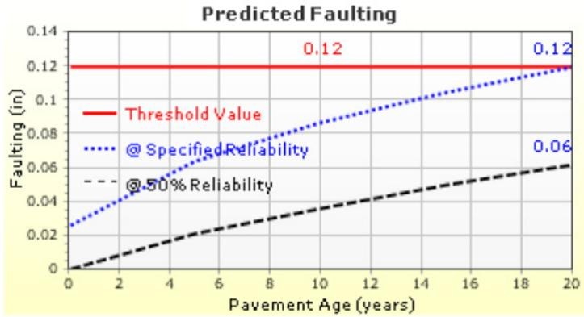
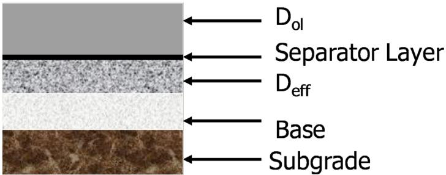

Overlay Thickness Calculation
Overlay thickness calculation is a design procedure prescribed by the 1993 AASHTO Guide for Rigid Pavement that determines the concrete overlay depth required to restore the effective structural capacity of an existing pavement so it can safely carry predicted future traffic loads while meeting serviceability, reliability and safety criteria [1][2]. The method begins with a condition‑survey (or, for bonded overlays, optionally a Remaining Life analysis) to obtain the effective slab thickness of the existing concrete and adjustment factors for joints, cracks, durability and fatigue, then uses the rigid‑pavement design equation or AASHTO nomograph to compute the total required thickness D_f for the target terminal serviceability (≈2.0–2.5) and reliability (80 %–90 %) [1][2]. For bonded overlays the overlay depth is simply the difference D_f − D_eff, whereas unbonded or composite overlays employ a square‑root relationship √(D_f² − D_eff²), with the result rounded to the nearest half‑inch and applied as a concrete layer whose material properties (elastic modulus, modulus of rupture, load‑transfer and drainage coefficients) represent the existing pavement [2].
Sources (2)
Purpose and design objectives
The guides indicate that “Overlay thickness calculation is used to ensure that an existing concrete pavement can retain acceptable performance as traffic loads increase and the pavement ages.” It is directed at the engineering problem of restoring lost structural capacity in an existing concrete pavement so that the combined system can safely carry predicted future traffic loads. The 1993 AASHTO Guide uses the concepts of structural deficiency and effective structural capacity for evaluating and characterizing the existing pavement to be overlaid. “By selecting an overlay thickness that satisfies these serviceability and reliability criteria, engineers address the structural deficiency and prevent premature failure.” [1][2]
The following figure illustrates a predicted faulting plot generated by AASHTOWare Pavement ME Design for an unbonded overlay configuration.

Predicted Faulting Plot for an Unbonded Overlay with Dowels and Tied Concrete Shoulders. [2]The figure displays a graph of predicted faulting in inches versus pavement age in years, showing that the performance trend remains below the threshold value over the design life.
[1] — Ch. 4 (p. 53); [2] — 1. Introduction (pp. 18–65)
The overlay thickness calculation must satisfy a set of interrelated functional, structural, durability, safety, and serviceability objectives. Functionally, the design must restore the pavement’s effective structural capacity so that the combined existing‑plus‑overlay system can safely carry predicted future traffic loads. Structurally, this is achieved by determining the required new‑pavement thickness (D) using the rigid‑pavement design equation and ensuring the added concrete layer provides sufficient capacity to meet those loads. Serviceability must be preserved; the overlay thickness design must be capable of preserving the pavement’s serviceability, starting from an initial index of about 4.2 and not falling below a terminal value of 2.0 on low‑traffic routes or 2.5 on moderate to high‑traffic routes, while achieving the prescribed reliability levels of roughly 80 % for low‑volume roads and 90 % for high‑volume roads. Safety is likewise maintained by limiting applications to pavements in fair‑to‑good condition, which minimizes pre‑overlay repairs and maintains acceptable ride quality. Durability requirements are met by excluding overlays on sections with existing durability problems, thereby promoting long‑term performance of the overlay. [1][2]
The following figure illustrates the predicted longitudinal transfer efficiency for an 8.0-inch unbonded CRCP overlay as determined by AASHTOWare Pavement ME Design.
 AASHTOWare Pavement ME Design Predicted LTE Plot for 8.0 in. Unbonded CRCP Overlay. [2]
AASHTOWare Pavement ME Design Predicted LTE Plot for 8.0 in. Unbonded CRCP Overlay. [2]
The average crack spacing calculated for this design is 39.1 in., which directly influences the load transfer efficiency shown in the plot.
[1] — Ch. 4 (p. 53); [2] — 1. Introduction (pp. 18–25)
Scope and applicability
Overlay thickness calculations under the 1993 AASHTO Guide are intended for existing concrete pavements where the initial serviceability is about 4.2 and the design targets a terminal serviceability of roughly 2.0 on low‑traffic roads or 2.5 on moderate to high‑traffic roads, using reliability levels of 80 % for low‑volume traffic and 90 % for high‑volume traffic. The overlay‑thickness calculation in the 1993 AASHTO Guide is appropriate for projects that add a concrete overlay—either bonded or unbonded—to an existing rigid pavement structure. It can be applied to stand‑alone concrete slabs, composite pavements where any asphalt layer is ignored when determining effective slab thickness, and even to existing asphalt surfaces that will serve as the structural base for a new concrete overlay. The method requires a condition or distress survey (e.g., spalling, joint and crack assessment) to compute the effective slab thickness (D_eff) of the existing pavement; the target finished thickness is then reduced by D_eff to obtain the required overlay depth. Bonded overlays are suitable when the underlying pavement is in fair‑to‑good condition and free of durability problems, so that only limited localized pre‑overlay repairs are needed. Unbonded overlays are appropriate for deteriorated concrete decks or composite pavements where a more extensive structural remediation is desired. [1][2]
The following figure illustrates a typical bonded concrete overlay application with a thickness of 4.5 inches.
 A folded ruler measuring the thickness of a bonded concrete overlay. [2]
A folded ruler measuring the thickness of a bonded concrete overlay. [2]
The image displays a folded ruler positioned against a concrete slab to measure its depth, illustrating the physical application of an overlay. Bonded concrete overlays over existing concrete are used to restore the structural capacity and commonly range between 2 and 6 in. in thickness. These overlays rely on the assumption of a long-term physical bond between the overlay and the existing surface to create a monolithic pavement layer.
[1] — Ch. 4 (p. 53); [2] — 1. Introduction (pp. 18–65)
The 1993 AASHTO Guide advises designers to abandon the Remaining Life method whenever its underlying assumptions are compromised. If the pavement shows little deterioration, traffic history is missing or highly uncertain, or extensive pre‑overlay repairs have been performed, the structural capacity estimates become unreliable and a Condition Survey or nondestructive deflection testing should be used instead. Likewise, when the existing concrete slab exhibits durability problems—or when a bonded overlay would be placed over a pavement that is not in fair to good condition—the Remaining Life calculation is inappropriate and an alternative rehabilitation strategy must be selected. Finally, for composite structures (e.g., a concrete overlay on an asphalt base) the guide explicitly requires the Condition Survey method because the Remaining Life approach cannot be applied. [2]
[2] — 1. Introduction (pp. 18–64)
Design inputs and requirements
The overlay‑thickness design requires several categories of input data. Traffic demand is captured by estimating the future traffic that the new pavement must support: “The first part of the design process involves determining the required thickness for a new pavement (D ) to carry the predicted future traffic.” Material properties of the existing concrete slab are needed, namely its elastic modulus, modulus of rupture, load‑transfer coefficient and drainage coefficient: “Specifically, the elastic modulus, modulus of rupture, load transfer coefficient, and drainage coefficient are representative of the existing pavement.” Existing‑condition information is obtained through a condition survey (or remaining‑life analysis) that yields an effective slab thickness and distress data. The survey quantifies unrepaired spalling, deteriorated joints/cracks per mile, durability problems, and fatigue cracking, which are used to compute adjustment factors: “Based on the distress survey results, determine the adjustment factors.” The effective existing thickness is then established: “The effective slab thickness of the existing pavement ( D_eff ) must then be determined with either the Condition Survey or Remaining Life methods described above.” Site‑specific, environmental and geotechnical inputs are not detailed in these excerpts. [2]
The following figure illustrates a bonded overlay on an existing concrete pavement, visually contextualizing the structural components and conditions discussed above.
 Illustration of Bonded Overlay of Existing Concrete Pavement. [2]
Illustration of Bonded Overlay of Existing Concrete Pavement. [2]
The figure displays a vertical cross-section of a pavement structure consisting of four distinct layers: an overlay, the existing slab, a base course, and the subgrade. Labels identify the top layer as $D_{ol}$ (overlay thickness) and the second layer as $D_{eff}$ (effective thickness of the existing concrete slab).
[2] — 1. Introduction (pp. 23–36)
Overlay‑thickness design is governed exclusively by the 1993 AASHTO Guide for Design of Rigid Pavement. The guides apply a performance framework that “The 1993 AASHTO Guide uses the concepts of structural deficiency and effective structural capacity for evaluating and characterizing the existing pavement to be overlaid.” Project performance assumptions are set as follows: “Initial serviceability: Assumed at 4.2 for this analysis and representing a well‑constructed concrete pavement,” with terminal serviceability values of 2.0 for low‑traffic roads and 2.5 for moderate to high‑traffic roads, and reliability targets of 80 percent for low‑volume roads and 90 percent for high‑volume roads. For bonded overlays the design is directed by “Section 5.8 of the 1993 AASHTO Guide addresses the thickness design of bonded overlays over existing concrete pavements,” requiring use of the rigid‑pavement design equation or nomograph to compute the required slab thickness and then applying the overlay thickness equation. [1][2]
[1] — Ch. 4 (p. 53); [2] — 1. Introduction (pp. 18–65)
Design methods and criteria
Overlay thickness design follows the systematic sequence prescribed in the 1993 AASHTO Guide, which “is based on mathematical models derived from empirical data collected during the American Association of State Highway Officials (AASHO) Road Test.” The process begins with an evaluation of the existing concrete slab. For bonded overlays the effective structural contribution (D_eff) is obtained either by a Condition Survey—applying joint‑crack, durability and fatigue adjustment factors to the measured slab thickness—or by the Remaining Life method that uses a traffic‑based fatigue relationship and a condition factor. For unbonded overlays only the Condition Survey is permitted; the survey provides a joint‑and‑crack adjustment factor (F_jcu) that is multiplied by the existing slab depth (D) to yield D_eff, “Determine D_eff using the Condition Survey method.”
The next step determines the total slab thickness required for future traffic (D_f). This value is calculated with the rigid‑pavement design equation or the AASHTO nomograph shown in Figure 3.7 of Part II, as instructed: “Determine D_f using the rigid pavement design equation or nomograph in figure 3.7.”
Finally, overlay thickness (D_ol) is computed: - For bonded overlays the required depth is the simple difference between required and effective capacities, “D _ { o l } = D _ { f } - D _ { e f f }”; the result is rounded to the nearest 0.5 in. - For unbonded (including composite) overlays the thickness follows a square‑root relationship that subtracts the squared effective thickness from the squared required thickness, “\mathrm { D _ { o l } } = \sqrt { ( \mathrm { D ^ { 2 } } _ { f } - \mathrm { D ^ { 2 } } _ { e f f } ) }”; the outcome is likewise rounded for construction.
Design tools that implement these procedures include the AASHTO software packages DARWin and WinPAS, as well as agency‑specific spreadsheets. [2]
The following figure illustrates the traffic input interface within the AASHTOWare Pavement ME design software.
 Screen Capture of AASHTOWare Pavement ME Design Traffic Menu. [2]
Screen Capture of AASHTOWare Pavement ME Design Traffic Menu. [2]
The figure displays the user interface for inputting traffic data into a pavement design software, specifically showing fields for Annual Average Daily Truck Traffic (AADTT), vehicle class distribution percentages, and hourly adjustment factors. Traffic inputs for the AASHTOWare Pavement ME Design are based on traffic load spectra, which describe the vehicle class distribution in terms of the number, weight, and geometries of the associated axle loads within each classification.
[2] — 1. Introduction (pp. 18–65)
The overlay‑thickness design must satisfy a set of performance, condition and reliability requirements that are common across the guides. The pavement is assumed to begin with an initial serviceability index of 4.2, and the target terminal serviceability is limited to 2.0 for low‑traffic routes and raised to 2.5 for moderate‑to‑high‑traffic corridors. Design reliability must reach at least 80 % on low‑volume roads and 90 % where traffic volumes are higher. The existing concrete slab must be in fair to good condition, with minimal pre‑overlay repairs and no identified durability problems. The calculation assumes that the elastic modulus, modulus of rupture, load transfer coefficient, and drainage coefficient are representative of the existing pavement; adjustment factors for joint‑and‑crack, durability, and fatigue are taken as 1.0 unless a distress survey provides specific values (e.g., a joint‑and‑crack factor ≈ 0.90 for unbonded overlays). The effective existing slab thickness is obtained by the Condition Survey method (D_eff). For composite pavements the Remaining Life approach is excluded; the Remaining Life method is not applicable to pavements with durability problems or to composite structures. The required total structural thickness (D_f) is derived from the 1993 AASHTO rigid‑pavement design equation or nomograph, and the overlay thickness is computed as D_ol = D_f – D_eff. The resulting overlay thickness is rounded to the nearest half‑inch, which serves as the governing design threshold and ensures that the final pavement meets the prescribed safety and reliability standards. [1][2]
The following figure illustrates the predicted faulting behavior resulting from this design approach.

AASHTOWare Pavement ME Design Predicted Faulting Plot for 9.0 in. Unbonded Overlay without Dowels. [2]The figure displays the predicted faulting in inches as a function of pavement age, comparing a threshold value against reliability-based predictions for an unbonded overlay without dowels.
[1] — Ch. 4 (p. 53); [2] — 1. Introduction (pp. 23–59)
Structural section and dimensions
Overlay Thickness Calculation requires only the thickness of the existing concrete slab (or its adjusted effective thickness) as the sole dimensional input. No dimensions are specified for pavement, base, subbase, treated‑soil, shoulder, edge‑support, or reinforcement. [2]
[2] — 1. Introduction (pp. 35–65)
Materials and mixture design
The overlay must be identified as a concrete material applied over an existing concrete pavement (bonded or unbonded). The thickness calculation requires specifying the key material properties of the existing slab. “elastic modulus, modulus of rupture, load transfer coefficient, and drainage coefficient are representative of the existing pavement.” Likewise, “elastic modulus, its modulus of rupture, the load‑transfer coefficient, and the drainage coefficient as input properties” are used in the rigid‑pavement design equation or nomograph to compute the required overlay thickness (D_f). No specific mixture proportions for the new concrete overlay are prescribed; the calculation only demands that the overlay be defined as concrete. Where applicable, supplemental structural features such as “dowels and tied concrete shoulders” should be noted, and the overlay may be an “unbonded overlays over existing concrete pavements”. [2]
The following figure illustrates an unbonded overlay applied to existing asphalt pavement.
 Illustration of Unbonded Overlay of Existing Asphalt Pavement. [2]
Illustration of Unbonded Overlay of Existing Asphalt Pavement. [2]
The figure depicts a cross-section of a pavement structure consisting of four distinct layers: a top gray layer, an existing asphalt layer, a base layer, and a subgrade.
[2] — 1. Introduction (pp. 23–65)
Structural details and interfaces
When calculating the thickness of a bonded concrete overlay, the procedure requires inputting the existing slab’s elastic modulus, modulus of rupture, load‑transfer coefficient and drainage coefficient. These properties capture the effect of any joints, reinforcement or load‑transfer system present in the underlying pavement, but no additional joint or reinforcement details are prescribed beyond using those coefficients. For unbonded overlays, the calculation must account for the condition of existing joints and cracks by applying a joint‑and‑crack adjustment factor (F_jcu) derived from the count of unrepaired spalling areas, deteriorated joints and cracks per mile; the default value is 0.93. No other reinforcement, load‑transfer devices, transitions, or special connections are specified—only this adjustment based on the distress inventory is required. In some design examples an unbonded overlay may be detailed with dowel bars as the load‑transfer system and tied concrete shoulders to provide edge connection, but these reinforcement and transition details are optional and not mandated by the thickness calculation itself. [2]
The following figure illustrates how the adjustment factor is determined based on the density of deteriorated transverse joints and cracks per mile.
 Adjustment factor for joint and crack conditions in unbonded concrete overlays. [2]
Adjustment factor for joint and crack conditions in unbonded concrete overlays. [2]
The figure displays a graph plotting the F_jcu adjustment factor against the count of deteriorated transverse joints and cracks per mile, showing that the factor decreases as pavement distress increases.
[2] — 1. Introduction (pp. 35–65)
The design of unbonded overlays over existing asphalt pavements using the 1993 AASHTO Guide is based on the following equation: D_ol = D_f. For thickness design purposes, the existing asphalt pavement is treated as the base, and the overlay is designed as a new concrete pavement. Compute the required concrete overlay thickness using the 1993 AASHTO Guide equation. Once the required thickness is known, an overlay 9.5 in. thick with dowels and tied concrete shoulders may be used to provide load transfer across the joint and ensure continuity between the old slab, the overlay, and adjacent structures. [2]
The following figure illustrates a bonded overlay configuration for existing concrete pavement.

Illustration of Bonded Overlay of Existing Concrete Pavement. [2]The figure depicts a cross-section of a pavement structure consisting of five distinct layers: an overlay, a separator layer, the effective existing slab thickness, a base, and a subgrade. It illustrates the specific application of bonded overlays where the new concrete is placed directly on the existing pavement without an interlayer, contrasting with unbonded designs that utilize a separator layer.
[2] — 1. Introduction (pp. 53–65)
Drainage, environment, and accessibility
In the overlay‑thickness design prescribed by Section 5.8, the calculation of the required new slab thickness (D_f) incorporates a drainage coefficient that reflects the existing concrete pavement’s ability to shed water; this coefficient is treated as an input alongside elastic modulus, modulus of rupture and load transfer coefficient. The guidance does not provide separate factors for moisture, climate or other environmental conditions within this section, implying those influences are assumed to be captured indirectly through the existing‑pavement inputs used in the condition survey or remaining‑life methods. [2]
[2] — 1. Introduction (pp. 23–25)